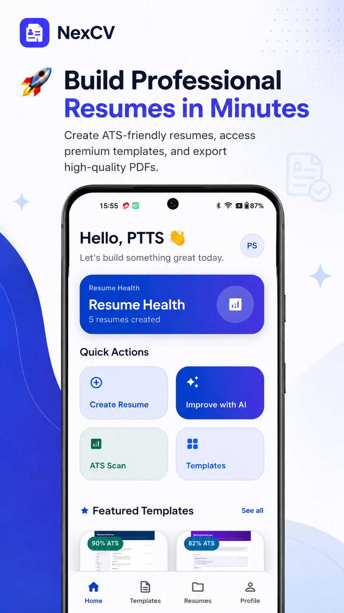
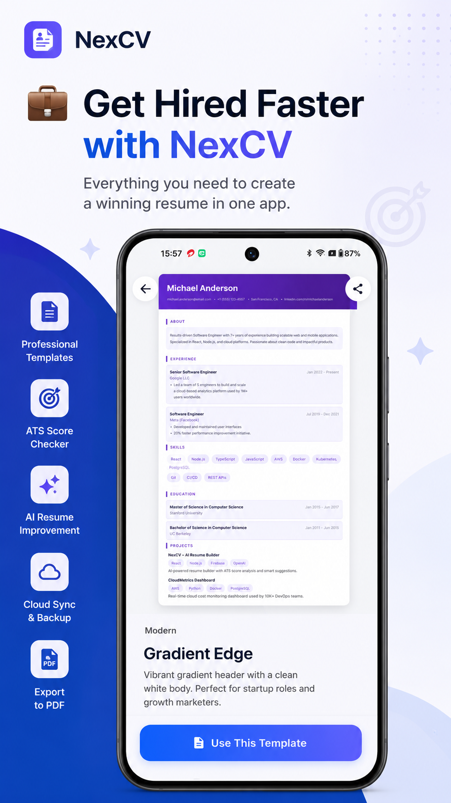
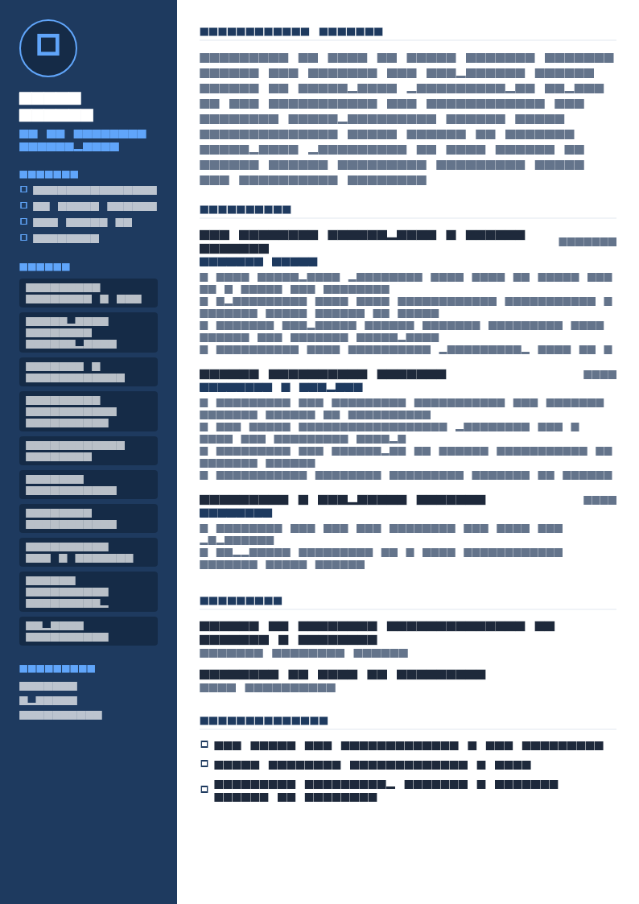

Why numbers are non-negotiable here
In most professions you have to work to find quantification. In sales, the numbers already exist, everyone knows they exist, and a resume without them answers a question you did not want asked.
A sales hiring manager reading “consistently exceeded targets and built strong client relationships” does not think “how modest”. They think: if the numbers were good, they would be here. Vagueness in a sales resume is read as evidence, and not in your favour.
So the structural priority is different from every other field: get the figures onto the page early, in a form that can be absorbed in a five-second glance, before you write a word about relationship building.
Section order
- Contact
- Summary — segment, years, quota, attainment, deal size
- Attainment table — the last three to five years at a glance
- Experience — bullets covering how, not just how much
- Skills, methodology and stack
- Awards — President’s Club, ranking, quota-club membership
- Education and certifications
The attainment table is unusual and that is exactly why it works — almost nobody includes one, and it answers the hiring manager’s first question without them having to hunt.
The summary
No numbers
Highly motivated sales professional with a proven track record of exceeding targets, building strong client relationships and driving revenue growth in competitive markets.
Numbers
Enterprise account executive with 8 years in B2B SaaS, carrying a $2.4M annual quota across mid-market manufacturing. Averaged 118% attainment over four years with a $95k mean deal size and a 94-day cycle. Closed the two largest new-logo deals in the region in FY25.
Six facts: segment, years, quota, attainment, deal size, cycle length. A sales leader can price you, place you and decide whether to read on — which is all the summary needs to achieve.
The attainment table
Three to five rows. Nothing else on a sales resume delivers this much information per square centimetre.
| Year | Quota | Attainment | Notes |
|---|---|---|---|
| FY25 | $2.4M | 124% | Top 3 of 41 AEs; largest new logo in region ($480k ARR) |
| FY24 | $2.2M | 112% | President’s Club |
| FY23 | $1.9M | 79% | Territory restructured in Q2; 4 months without an SE |
| FY22 | $1.6M | 131% | Ramped 2 months early after transfer from SMB |
Note the FY23 row. Including a miss with a one-line explanation is stronger than omitting it, because omission looks like concealment and every sales leader has missed a number. What they are screening for is whether you understand why.
If a formatted table worries you for parsing reasons, present the same content as labelled lines: FY25: $2.4M quota, 124% attainment, top 3 of 41. The information is what matters, not the grid.
Bullets: how you did it, not just how much
The table covers the outcome. Your bullets have to answer the follow-up question, which is always the same: was that territory, luck, or repeatable skill?
- Grew territory revenue from $1.1M to $2.8M in three years by building a partner-referral channel that now supplies 40% of qualified pipeline.
- Cut average sales cycle from 141 to 94 days by introducing a mutual action plan template, now standard across a team of 9.
- Recovered 9 at-risk accounts worth $640k ARR through a structured executive check-in programme after a pricing change.
- Built the discovery question set used in onboarding for all new AEs; new-hire ramp to first close fell from 5 months to 3.
The last two are the ones that get senior candidates hired. Selling well is expected; making other people sell better is what distinguishes a candidate for a lead or manager role, and it is evidence that your results were method rather than territory.
Unsupported
Consistently exceeded quota through strong relationship building and a consultative approach to selling.
Supported
Qualified out 30% of inbound leads at first call using a MEDDICC-based scorecard, raising win rate on worked deals from 19% to 31% without reducing closed volume.


The sales metric menu
| Dimension | What to cite |
|---|---|
| Quota | Annual number, attainment percentage, rank within team, quota-club or President’s Club years |
| Deals | Average deal size, largest deal, deals closed per year, new logos versus expansion split |
| Cycle & funnel | Average cycle length, win rate on worked deals, stage conversion, pipeline coverage ratio |
| Territory | Segment, geography, vertical, account count, revenue growth in territory |
| Activity | Meetings booked per month, outbound sequences, demos delivered, pipeline generated (SDR and BDR) |
| Retention | Gross and net retention, renewal rate, expansion revenue, churn prevented (AM and CS) |
| Team | Reps managed, team attainment, ramp time, attrition, reps promoted (leadership) |
Two that carry disproportionate weight. Attainment across several years, because it distinguishes consistency from one lucky patch. And net retention for anyone in account management, because expansion revenue is the metric most SaaS businesses are currently organised around.
Handling a bad year
Everybody has one. The resume question is only how you frame it, and there are three honest options:
- State it with a cause. “79% — territory restructured in Q2, 4 months without a solutions engineer.” Specific, checkable, and it moves the conversation to circumstance.
- State it with a recovery. “79% in FY23 following a segment change; 124% the year after in the same patch.” A trajectory is a stronger story than a single good year.
- Average it. “Averaged 118% attainment across four years.” Legitimate, provided you are ready to give the year-by-year breakdown when asked — and you will be asked.
Do not silently drop the year from the table. A gap in an otherwise complete sequence is the first thing an experienced sales leader notices, and they will assume worse than the truth. Do not attribute a miss entirely to the market either — someone on your team hit their number that year.
Skills, methodology and stack
- Methodology: MEDDICC, SPIN, Challenger, mutual action plans, multi-threading
- Motion: outbound new business, inbound qualification, land-and-expand, renewals and upsell
- Commercial: pricing and discount governance, MSA and SoW negotiation, procurement and legal navigation, security review handling
- Segment: enterprise and mid-market B2B SaaS; manufacturing, logistics and industrial verticals
- Stack: Salesforce, HubSpot, Outreach, Gong, ZoomInfo, LinkedIn Sales Navigator, Clari
- Forecasting: pipeline hygiene, weighted forecasting, commit and best-case discipline
Name your segment and motion explicitly. Enterprise and SMB selling are different jobs with different cycles and different skills, and so are new business and expansion. A hiring manager screening for enterprise new business will pass over a resume that does not say which you have done.
The forecasting line is underrated. Sales leaders spend a great deal of energy on rep forecast accuracy, and a candidate who mentions it unprompted signals maturity. Full lists in resume skills.
SDR, AE, account management and leadership
| Role | Lead with | Typical bullet shape |
|---|---|---|
| SDR / BDR | Meetings booked, pipeline generated, conversion, activity volume | Booked 34 qualified meetings a month against a target of 25, generating $3.1M of pipeline in the year at a 22% SQL rate. |
| Account executive | Quota, attainment, deal size, cycle, new logos | Closed 31 new logos at a $95k average, 124% of a $2.4M quota. |
| Account manager / CSM | Net retention, renewal rate, expansion, book size | Managed a $6.4M book at 112% net retention, with 94% gross renewal across 68 accounts. |
| Sales engineer | Deals supported, technical win rate, POC conversion | Supported $8M of closed-won across 40 deals; POC-to-close conversion of 71%. |
| Sales manager | Team attainment, ramp time, attrition, promotions | Led 9 AEs to 108% of a $19M team number; cut new-hire ramp from 5 months to 3 and promoted 2 reps. |
| Retail / field sales | Store or route revenue, conversion, basket size, targets | Grew store revenue 18% year on year against a district average of 6%, at a 34% conversion rate. |
If you are moving into sales from a customer-facing role, the transferable evidence is target-carrying work of any kind — conversion rates, upsell, retention, fundraising. The structure to use is in career change resume.
What you cannot disclose
Sales resumes carry a specific risk that others do not: much of your best material is your employer’s commercial information. Three practical rules.
Client names: only if the win is already public through a press release or published case study. Otherwise describe the account by type and size — “a $480k ARR enterprise logistics account”.
Absolute figures: if your employer treats territory revenue or pricing as confidential, use percentages, growth rates and ranges instead. “Grew territory 155% over three years” carries the same signal as the raw numbers.
Pipeline and forecast data: never reproduce it. A hiring manager who sees a candidate publishing their current employer’s pipeline learns something about how you will treat theirs.
Templates

Corporate Blue resume template
Corporate Blue gives an attainment table and multi-year quota history a structured, authoritative frame without the sidebar layouts that scramble parsing. ATS 88.
Use this template in NextCV| Template | ATS score | Price | Best for |
|---|---|---|---|
| Corporate Blue | 88 | Premium | Structured and authoritative — suits an attainment table |
| ATS Pro | 98 | Free | Maximum parsing safety for large employer portals |
| Pure White | 95 | Free | Senior sales leaders wanting a restrained document |
| Executive Classic | 90 | Free | Sales directors and VPs with two-page histories |
| Skills Based | 85 | Free | Moving into sales from another customer-facing role |
Checklist
- Summary contains quota, attainment, deal size and segment
- Attainment table covering three to five years
- Any missed year included, with a one-line cause
- Segment and motion named explicitly (enterprise/mid-market, new business/expansion)
- At least two bullets explaining method rather than outcome
- At least one bullet showing you improved how others sell
- Cycle length, win rate or conversion included
- Retention and expansion figures for account management roles
- Methodology and CRM stack named
- Awards and ranking stated with the population (top 3 of 41)
- No confidential client names, pricing or pipeline data
- One page under eight years, two pages beyond
Frequently asked questions
What numbers should be on a sales resume?
Quota, attainment against it, average deal size, sales cycle length, territory or segment, and revenue growth. Add retention or renewal rate for account management roles and pipeline generated for SDR roles.
Attainment as a percentage over several years is the single most persuasive figure, because it shows consistency rather than one good quarter.
How do I write a sales resume with no sales experience?
Use whatever customer-facing, target-carrying work you have. Retail with conversion or upsell targets, hospitality with covers and spend per head, recruitment, fundraising, or even a university society where you sold sponsorship all demonstrate the relevant behaviour.
Lead with activity and outcome numbers, then add a sales methodology certification to signal seriousness about the move.
Should I put my quota on a resume if I missed it?
Yes, with context. A resume showing 118%, 104%, 79% and 112% across four years with a one-line explanation of the 79% reads as honest and credible. A resume that silently omits one year invites the assumption that it was worse than it was.
Recruiters in sales assume everyone has missed a number at some point. What they are screening for is whether you know why and what you did about it.
How long should a sales resume be?
One page for under about eight years, two pages beyond that. Sales resumes benefit from brevity because the key facts are numeric and a hiring manager wants them fast.
Use the space you save on an attainment table rather than on more prose about relationship building.
What are the most important skills on a sales resume?
Named methodology (MEDDICC, SPIN, Challenger, Sandler), the CRM and sales stack you have actually operated, negotiation and commercial terms, territory and pipeline management, and the segment you have sold into.
Segment matters more than candidates expect: enterprise, mid-market and SMB selling are genuinely different jobs, and so are new business and expansion.
Can I include client names on a sales resume?
Only where they are already public — a press-released win or a published case study. Otherwise describe the account by type and size: “a $480k ARR enterprise logistics account”.
The same applies to internal figures. Do not publish revenue, pricing or pipeline data your employer treats as confidential; use percentages and relative growth instead.
NextCV Editorial
NextCV is an AI resume builder by Empire Softtech. We publish the same guidance our in-app ATS analyser is built on — seven weighted sections, 29 templates scored from 72 to 98, and no formatting advice we would not follow ourselves.